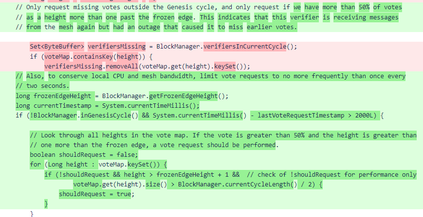
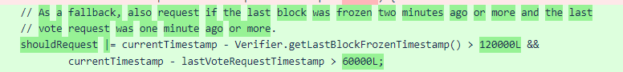

Nyzo version 472 (commit on GitHub) is a minor update that increases resiliency of individual verifiers to intermittent network issues.
Under ideal conditions, all verifiers in the mesh receive all votes from all other verifiers. If a node has temporary network connection issues, it might miss some votes. A verifier only sends a vote when that vote is for a new height or when it has changed its vote for a height. So a verifier with connection issue must request any missing
This update is in response to an issue that arose with several verifiers, most acutely affecting Bushido_Brown (326b7c2478610c2b-413ea139d32906c3-eb15d57a2842bba6-f7b7a61f636af9d9), which was the only verifier forced out of the cycle due to the issue.
The requestMissingVotes() method of the BlockVoteManager class is called once per iteration of the main verifier loop. The previous implementation of this method was quite naïve: if a block had not been frozen in more than 15 seconds, and a missing-vote request had not been performed in more than 15 seconds, all verifiers in the cycle from whom the current verifier did not have votes would be queried.
This logic was problematic for two reasons, only one of which was causing problems so far. The first concern, which had not yet manifested itself as a problem in the mesh, was the limitation of requests only to verifiers from whom votes had not yet been received. The second concern, which had caused problems for some verifiers, is that the 15-second wait made catching up to the frozen edge difficult for verifiers with network connection issues. In the case of Bushido_Brown, the slow rate of this process caused the verifier's frozen edge to fall behind the retention edge of all other verifiers in the mesh. As verifiers typically respond with null responses to block requests for blocks behind their retention edges, this meant that Bushido_Brown was unable to catch up at all.
The new code has multiple advantages: it reduces the minimum interval between missing-vote requests to 2 seconds, and it also looks for a more specific situation that arises when a temporary network issue causes some votes to be lost, thus eliminating some unnecessary vote requests when the preferred verifier has failed to produce a block. When a verifier has many votes more than one height past the frozen edge, it is reasonable to assume that some earlier votes were missed. So, if a verifier has registered more than 50% of votes for a height more than one block past the frozen edge, it will request missing votes.
One additional condition is present to keep the mesh processing in the case of a temporary but wide-ranging loss of communication: if a block has not been frozen in more than 120 seconds (2 minutes) and a missing-vote request has not been performed in 60 seconds (1 minute), then votes are requested.
Also, to account for votes that may have changed, all verifiers in the current cycle are now queried, not just those from whom votes are missing.